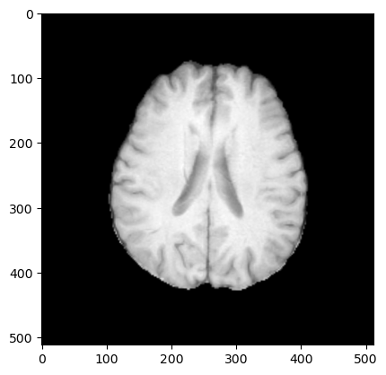
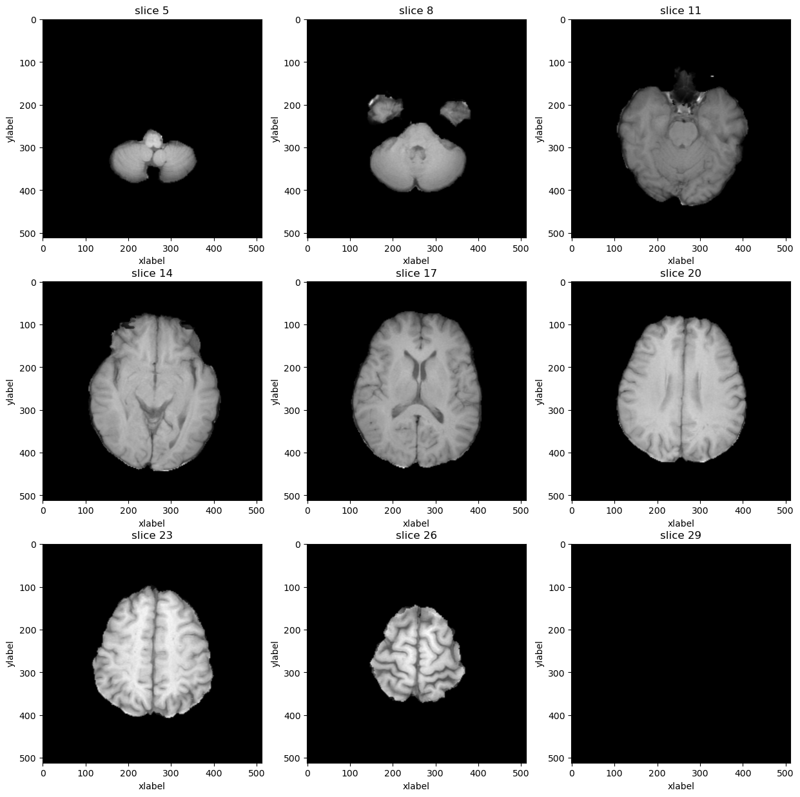
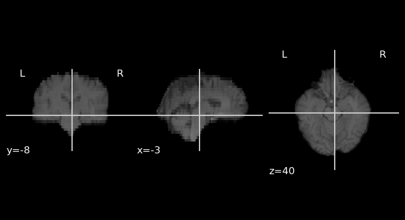
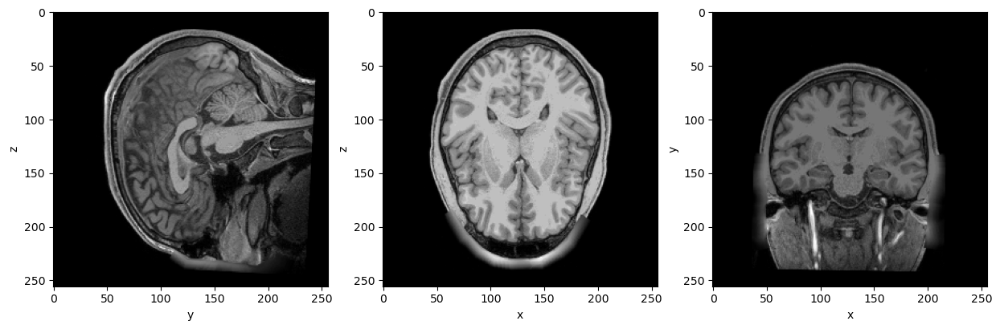
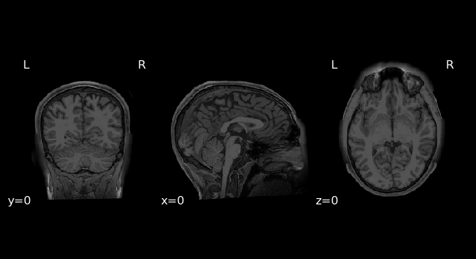
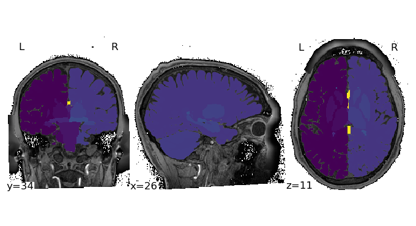
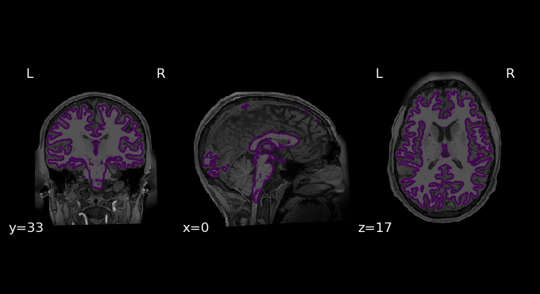

# !apt update
# !apt install -y libtiff5
# !conda install -y -c conda-forge matplotlibMRI data analysis, sources databases, tools
- MRI data formats
- accessing data voxel and meta data
- visualization
- transformations
- preprocessing
from pydicom.data import get_testdata_files
import matplotlib.pyplot as plt
import warnings
warnings.filterwarnings('ignore')
from ipywidgets import interact, interactive, fixed, interact_manual
from IPython.display import Image
import ipywidgets as widgets
import nibabel.freesurfer.mghformat as mgh
import nibabel as nib
import pydicom
from glob import glob
import os
import numpy as np
from nilearn.input_data import NiftiMasker
from nilearn import plotting
%matplotlib inline1) MRI File Formats
All volume-based formats store 3D or 4D arrays of voxels in some fashion with a variety of additional meta-data. Anatomical images are typically 3D while EPIs are typically 4D (x,y,z, and time).
Image(filename = "./assets/voxel.png", width=1000, height=800)
voxel: A three-dimensional pixel and the basic unit of spatial measurement in MRI.
volume: The three dimensional array covering the brain. Volumes are composed of voxels All volume files contain both meta-data and voxels. The meta-data is just a set of information about the file’s contents while the voxels are a 3D or 4D array of values.
slice: A two-dimensional ‘view’ of the three-dimensional volume obtained by taking all of the elements in two of the dimensions for a fixed location in the third dimension.
Timecourse or Timeseries: a set of numbers representing a measurement (like BOLD activation) taken over time.
Here are the most typical file formats of neuroimaging data: 1) DICOM (.dcm, .ima)
2) NIFTI (.nii/nii.gz, gii.gz)
3) MGH (.mgh, .mgz)
4) Custom (.dtseries, .label, .surf)
DICOM file format
# Single slice of Brain MRI
dcm_path = '/workspace/data/Brats_kaggle/DICOM/00008/T1w/'
g = glob(os.path.join(dcm_path, '*'))
!tree ./data/Brats_kaggle/DICOM/ --filelimit 2
# Print out the first 5 file names to verify we're in the right folder.
print('Total of %d DICOM images.\nFirst 5 filenames:' % len(g))
print('Standart DICOM directory tree: \n')
print('\n'.join(g[:]))./data/Brats_kaggle/DICOM/
├── 00008 [4 entries exceeds filelimit, not opening dir]
└── 00009 [4 entries exceeds filelimit, not opening dir]
2 directories, 0 files
Total of 30 DICOM images.
First 5 filenames:
Standart DICOM directory tree:
/workspace/data/Brats_kaggle/DICOM/00008/T1w/Image-24.dcm
/workspace/data/Brats_kaggle/DICOM/00008/T1w/Image-21.dcm
/workspace/data/Brats_kaggle/DICOM/00008/T1w/Image-5.dcm
/workspace/data/Brats_kaggle/DICOM/00008/T1w/Image-4.dcm
/workspace/data/Brats_kaggle/DICOM/00008/T1w/Image-1.dcm
/workspace/data/Brats_kaggle/DICOM/00008/T1w/Image-14.dcm
/workspace/data/Brats_kaggle/DICOM/00008/T1w/Image-27.dcm
/workspace/data/Brats_kaggle/DICOM/00008/T1w/Image-7.dcm
/workspace/data/Brats_kaggle/DICOM/00008/T1w/Image-3.dcm
/workspace/data/Brats_kaggle/DICOM/00008/T1w/Image-29.dcm
/workspace/data/Brats_kaggle/DICOM/00008/T1w/Image-12.dcm
/workspace/data/Brats_kaggle/DICOM/00008/T1w/Image-19.dcm
/workspace/data/Brats_kaggle/DICOM/00008/T1w/Image-6.dcm
/workspace/data/Brats_kaggle/DICOM/00008/T1w/Image-8.dcm
/workspace/data/Brats_kaggle/DICOM/00008/T1w/Image-17.dcm
/workspace/data/Brats_kaggle/DICOM/00008/T1w/Image-10.dcm
/workspace/data/Brats_kaggle/DICOM/00008/T1w/Image-9.dcm
/workspace/data/Brats_kaggle/DICOM/00008/T1w/Image-11.dcm
/workspace/data/Brats_kaggle/DICOM/00008/T1w/Image-25.dcm
/workspace/data/Brats_kaggle/DICOM/00008/T1w/Image-2.dcm
/workspace/data/Brats_kaggle/DICOM/00008/T1w/Image-18.dcm
/workspace/data/Brats_kaggle/DICOM/00008/T1w/Image-22.dcm
/workspace/data/Brats_kaggle/DICOM/00008/T1w/Image-13.dcm
/workspace/data/Brats_kaggle/DICOM/00008/T1w/Image-23.dcm
/workspace/data/Brats_kaggle/DICOM/00008/T1w/Image-30.dcm
/workspace/data/Brats_kaggle/DICOM/00008/T1w/Image-15.dcm
/workspace/data/Brats_kaggle/DICOM/00008/T1w/Image-20.dcm
/workspace/data/Brats_kaggle/DICOM/00008/T1w/Image-26.dcm
/workspace/data/Brats_kaggle/DICOM/00008/T1w/Image-16.dcm
/workspace/data/Brats_kaggle/DICOM/00008/T1w/Image-28.dcmCommon MRI DICOM sctructure
dcm_file = pydicom.dcmread(os.path.join(dcm_path, 'Image-20.dcm'))
plt.imshow(dcm_file.pixel_array, cmap='gray', origin='upper')
rows = int(dcm_file.Rows)
cols = int(dcm_file.Columns)
print('Dimension of one dcm file:', dcm_file.pixel_array.shape)
plt.show()Dimension of one dcm file: (512, 512)
Lets stack all DICOM’s and plot em aall:
def load_scan(path):
slices = [pydicom.dcmread(dcm_path + '/' + s) for s in os.listdir(dcm_path) if '.dcm' in s]
slices.sort(key = lambda x: int(x.InstanceNumber))
try:
slice_thickness = np.abs(slices[0].ImagePositionPatient[2] - slices[1].ImagePositionPatient[2])
except:
slice_thickness = np.abs(slices[0].SliceLocation - slices[1].SliceLocation)
for s in slices:
s.SliceThickness = slice_thickness
image = np.stack([s.pixel_array for s in slices])
return np.array(image)dcm_stack = load_scan(dcm_path)
rows=3
cols=3
start_with=5
show_every=3
fig,ax = plt.subplots(rows,cols,figsize=[15,15])
for i in range(rows*cols):
ind = start_with + i*show_every
ax[int(i/rows),int(i % rows)].imshow(dcm_stack[ind],cmap='gray', origin="upper")
ax[int(i/rows),int(i % rows)].set_title('slice %d' % ind)
ax[int(i/rows),int(i % rows)].set_xlabel('xlabel')
ax[int(i/rows),int(i % rows)].set_ylabel('ylabel')
plt.show()
DICOM Headers
Another good way to look at the meta-data in a volume file is to load it with the relevant programming environment and examine the data-structures there. Here are a few examples. Accordingly, we need to be able to, at a minimum, store some amount of information about the coordinate system employed in any MRI volume file, and ideally some amount of information about how to precisely align the brain to some standard orientation.
pat_name = dcm_file.PatientName
display_name = pat_name.family_name + ", " + pat_name.given_name
print("Patient id.......:", dcm_file.PatientID)
print("Modality.........:", dcm_file.Modality)
print("Rows.............:", dcm_file.Rows)
print("Columns..........:", dcm_file.Columns)
print("Pixel Spacing....:", dcm_file.PixelSpacing)
print("Slide Thickness.:", dcm_file.SliceThickness)
print("Patient Position.:", dcm_file.PatientPosition)Patient id.......: 00008
Modality.........: MR
Rows.............: 512
Columns..........: 512
Pixel Spacing....: [0.449200004339218, 0.449200004339218]
Slide Thickness.: 5
Patient Position.: HFS#dcm_header = pydicom.dcmread(dcm_file)
dcm_fileDataset.file_meta -------------------------------
(0002, 0010) Transfer Syntax UID UI: Implicit VR Little Endian
-------------------------------------------------
(0008, 0005) Specific Character Set CS: 'ISO_IR 100'
(0008, 0008) Image Type CS: ['DERIVED', 'SECONDARY']
(0008, 0016) SOP Class UID UI: MR Image Storage
(0008, 0018) SOP Instance UID UI: 1.2.826.0.1.3680043.8.498.12619773221542827483556664577340178568
(0008, 0050) Accession Number SH: '00008'
(0008, 0060) Modality CS: 'MR'
(0008, 103e) Series Description LO: 'T1w'
(0010, 0010) Patient's Name PN: '00008'
(0010, 0020) Patient ID LO: '00008'
(0018, 0023) MR Acquisition Type CS: '2D'
(0018, 0050) Slice Thickness DS: '5.0'
(0018, 0081) Echo Time DS: None
(0018, 0083) Number of Averages DS: '2.0'
(0018, 0084) Imaging Frequency DS: '127.759852'
(0018, 0085) Imaged Nucleus SH: '1H'
(0018, 0086) Echo Number(s) IS: '1'
(0018, 0087) Magnetic Field Strength DS: '3.0'
(0018, 0088) Spacing Between Slices DS: '1.0'
(0018, 0091) Echo Train Length IS: '1'
(0018, 0093) Percent Sampling DS: '100.0'
(0018, 0094) Percent Phase Field of View DS: '80.0'
(0018, 0095) Pixel Bandwidth DS: '162.773'
(0018, 1094) Trigger Window IS: '0'
(0018, 1100) Reconstruction Diameter DS: '230.0'
(0018, 1310) Acquisition Matrix US: [0, 384, 224, 0]
(0018, 1312) In-plane Phase Encoding Direction CS: 'ROW'
(0018, 1314) Flip Angle DS: '90.0'
(0018, 1316) SAR DS: '0.586425'
(0018, 5100) Patient Position CS: 'HFS'
(0020, 000d) Study Instance UID UI: 1.2.826.0.1.3680043.8.498.12703311983669326090133525868855770228
(0020, 000e) Series Instance UID UI: 1.2.826.0.1.3680043.8.498.35546324633307446370235238616216486386
(0020, 0011) Series Number IS: '4'
(0020, 0013) Instance Number IS: '20'
(0020, 0032) Image Position (Patient) DS: [-108.203, -114.126, 62.9744]
(0020, 0037) Image Orientation (Patient) DS: [0.999463, 0.0145905, 0.029336, -0.0160642, 0.998587, 0.0506459]
(0020, 0060) Laterality CS: ''
(0020, 1040) Position Reference Indicator LO: ''
(0020, 1041) Slice Location DS: '72.15431976'
(0020, 9057) In-Stack Position Number UL: 20
(0028, 0002) Samples per Pixel US: 1
(0028, 0004) Photometric Interpretation CS: 'MONOCHROME2'
(0028, 0010) Rows US: 512
(0028, 0011) Columns US: 512
(0028, 0030) Pixel Spacing DS: [0.449200004339218, 0.449200004339218]
(0028, 0100) Bits Allocated US: 16
(0028, 0101) Bits Stored US: 16
(0028, 0102) High Bit US: 15
(0028, 0103) Pixel Representation US: 1
(0028, 1050) Window Center DS: '3123.0'
(0028, 1051) Window Width DS: '6247.0'
(0028, 1052) Rescale Intercept DS: '0.0'
(0028, 1053) Rescale Slope DS: '1.0'
(0028, 1054) Rescale Type LO: 'US'
(7fe0, 0010) Pixel Data VR.OW: Array of 524288 elementsData manipulations
Assume that you recieved new dicom from hospital or downloaded challenge data and you need to convert to convinient NIFTI, let’s review the tool distinctive from simple one represented above:
dcm2niix
Robust .dcm to nii/nii.gz converter. Params %i %n %p stands for patient ID, subject name, protocol name DICOM header keys. Try to run with params %p_%t_%s
https://www.nitrc.org/plugins/mwiki/index.php/dcm2nii:MainPage#General_Usage
!dcm2niix -o /workspace/ -f %i_%n_%p -z y ./data/Brats_kaggle/DICOM/00008/T1wChris Rorden's dcm2niiX version v1.0.20240202 GCC5.4.0 x86-64 (64-bit Linux)
Found 30 DICOM file(s)
DICOM appears corrupt: first group:element should be 0x0002:0x0000 './data/Brats_kaggle/DICOM/00008/T1w/Image-24.dcm'
DICOM appears corrupt: first group:element should be 0x0002:0x0000 './data/Brats_kaggle/DICOM/00008/T1w/Image-21.dcm'
DICOM appears corrupt: first group:element should be 0x0002:0x0000 './data/Brats_kaggle/DICOM/00008/T1w/Image-5.dcm'
DICOM appears corrupt: first group:element should be 0x0002:0x0000 './data/Brats_kaggle/DICOM/00008/T1w/Image-4.dcm'
DICOM appears corrupt: first group:element should be 0x0002:0x0000 './data/Brats_kaggle/DICOM/00008/T1w/Image-1.dcm'
DICOM appears corrupt: first group:element should be 0x0002:0x0000 './data/Brats_kaggle/DICOM/00008/T1w/Image-14.dcm'
DICOM appears corrupt: first group:element should be 0x0002:0x0000 './data/Brats_kaggle/DICOM/00008/T1w/Image-27.dcm'
DICOM appears corrupt: first group:element should be 0x0002:0x0000 './data/Brats_kaggle/DICOM/00008/T1w/Image-7.dcm'
DICOM appears corrupt: first group:element should be 0x0002:0x0000 './data/Brats_kaggle/DICOM/00008/T1w/Image-3.dcm'
DICOM appears corrupt: first group:element should be 0x0002:0x0000 './data/Brats_kaggle/DICOM/00008/T1w/Image-29.dcm'
DICOM appears corrupt: first group:element should be 0x0002:0x0000 './data/Brats_kaggle/DICOM/00008/T1w/Image-12.dcm'
DICOM appears corrupt: first group:element should be 0x0002:0x0000 './data/Brats_kaggle/DICOM/00008/T1w/Image-19.dcm'
DICOM appears corrupt: first group:element should be 0x0002:0x0000 './data/Brats_kaggle/DICOM/00008/T1w/Image-6.dcm'
DICOM appears corrupt: first group:element should be 0x0002:0x0000 './data/Brats_kaggle/DICOM/00008/T1w/Image-8.dcm'
DICOM appears corrupt: first group:element should be 0x0002:0x0000 './data/Brats_kaggle/DICOM/00008/T1w/Image-17.dcm'
DICOM appears corrupt: first group:element should be 0x0002:0x0000 './data/Brats_kaggle/DICOM/00008/T1w/Image-10.dcm'
DICOM appears corrupt: first group:element should be 0x0002:0x0000 './data/Brats_kaggle/DICOM/00008/T1w/Image-9.dcm'
DICOM appears corrupt: first group:element should be 0x0002:0x0000 './data/Brats_kaggle/DICOM/00008/T1w/Image-11.dcm'
DICOM appears corrupt: first group:element should be 0x0002:0x0000 './data/Brats_kaggle/DICOM/00008/T1w/Image-25.dcm'
DICOM appears corrupt: first group:element should be 0x0002:0x0000 './data/Brats_kaggle/DICOM/00008/T1w/Image-2.dcm'
DICOM appears corrupt: first group:element should be 0x0002:0x0000 './data/Brats_kaggle/DICOM/00008/T1w/Image-18.dcm'
DICOM appears corrupt: first group:element should be 0x0002:0x0000 './data/Brats_kaggle/DICOM/00008/T1w/Image-22.dcm'
DICOM appears corrupt: first group:element should be 0x0002:0x0000 './data/Brats_kaggle/DICOM/00008/T1w/Image-13.dcm'
DICOM appears corrupt: first group:element should be 0x0002:0x0000 './data/Brats_kaggle/DICOM/00008/T1w/Image-23.dcm'
DICOM appears corrupt: first group:element should be 0x0002:0x0000 './data/Brats_kaggle/DICOM/00008/T1w/Image-30.dcm'
DICOM appears corrupt: first group:element should be 0x0002:0x0000 './data/Brats_kaggle/DICOM/00008/T1w/Image-15.dcm'
DICOM appears corrupt: first group:element should be 0x0002:0x0000 './data/Brats_kaggle/DICOM/00008/T1w/Image-20.dcm'
DICOM appears corrupt: first group:element should be 0x0002:0x0000 './data/Brats_kaggle/DICOM/00008/T1w/Image-26.dcm'
DICOM appears corrupt: first group:element should be 0x0002:0x0000 './data/Brats_kaggle/DICOM/00008/T1w/Image-16.dcm'
DICOM appears corrupt: first group:element should be 0x0002:0x0000 './data/Brats_kaggle/DICOM/00008/T1w/Image-28.dcm'
Warning: Unable to determine manufacturer (0008,0070), so conversion is not tuned for vendor.
Convert 30 DICOM as /workspace/00008_00008_T1w (512x512x30x1)
Conversion required 0.466875 seconds (0.466837 for core code).Plotting results of convertation:
plotting.plot_anat('/workspace/00008_00008_T1w.nii.gz', bg_img=None)
Nifti File Format
The Neuroimaging Informatics Technology Initiative (nifti) is format to store radiological information, the first three dimensions are reserved to define the three spatial dimensions — x, y and z —, while the fourth dimension is reserved to define the time points — t. The remaining dimensions, from fifth to seventh, are for other uses. The fifth dimension, however, can still have some predefined uses, such as to store voxel-specific distributional parameters or to hold vector-based data.
nii_file = nib.load('/workspace/00008_00008_T1w.nii.gz')Nifti Header
nii_header = nii_file.header
print("Image dimensions...........................:", nii_header['dim'])
print("Voxel size and time interval...............:", nii_header['pixdim'])
print("Slice Order................................:", nii_header['slice_code'])
print("Human readable text........................:", nii_header['descrip'])
print("Three rows of sform affine transformation..:"'\n', nii_header['srow_x'],'\n', nii_header['srow_y'],'\n', nii_header['srow_z'])Image dimensions...........................: [ 3 512 512 30 1 1 1 1]
Voxel size and time interval...............: [-1. 0.4492 0.4492 4.999977 0. 0. 0.
0. ]
Slice Order................................: 0
Human readable text........................: np.bytes_(b'TE=0;Time=0.000')
Three rows of sform affine transformation..:
[-4.4895884e-01 -7.2160424e-03 1.4277743e-01 1.0917840e+02]
[-6.5540536e-03 4.4856551e-01 2.5544879e-01 -1.1994498e+02]
[ 1.3177733e-02 -2.2750149e-02 4.9914060e+00 -2.0237373e+01]MGH File Format
MGH File Format is a default format of freesurfer preprocessing software. That can do the following
Image(filename = "./assets/freesurfer.png", width=1000, height=800)
mgh_file = mgh.load('./data/freesurfer_preproc/100206/mri/T1.mgz')
mgh_file.get_fdata().shape(256, 256, 256)# Define plot function
def show_slices(image, axis1="x", axis2="y", axis3="z"):
slice_0 = image[round(len(image[0])/2), :, :]
slice_1 = image[:, round(len(image[1])/2), :]
slice_2 = image[:, :, round(len(image[2])/2)]
image = ([slice_0, slice_1, slice_2])
fig, axes = plt.subplots(1, len(image), figsize=[15,15])
for i, slice in enumerate(image):
axes[i].imshow(slice.T, cmap="gray", origin="upper")
axes[0].set(xlabel=axis2, ylabel=axis3)
axes[1].set(xlabel=axis1, ylabel=axis3)
axes[2].set(xlabel=axis1, ylabel=axis2)
plt.show()mgh_image = np.array(mgh_file.dataobj).astype(np.float64)
show_slices(mgh_image)
MGH Header
mgh_header = mgh_file.header
print("Image dimensions........:", mgh_header['dims'])
print("Orientation matrix...: "'\n', mgh_header.get_affine())Image dimensions........: [256 256 256 1]
Orientation matrix...:
[[-1.0000000e+00 1.8626451e-09 -4.0745363e-10 1.2723160e+02]
[ 2.9103830e-10 -3.7252903e-09 1.0000001e+00 -8.1819077e+01]
[ 1.8626451e-09 -1.0000000e+00 0.0000000e+00 1.3774704e+02]
[ 0.0000000e+00 0.0000000e+00 0.0000000e+00 1.0000000e+00]]plotting.plot_anat(mgh_file, bg_img=None)
Image(filename = "./assets/Orientation.png", width=600, height=800)
DICOM patient coordinate and Nifti coodrinate system when Patient is Head First Supine. The arrows of axes indicate the positive directions, LPS for DICOM and RAS for Nifti. For Dicom images, the origin (0,0,0) refers to magnet isocenter.
Voxel size and Pixel spacing are important as we for preprocessing we can use only isomorphic voxel
BIDS Brain Imaging Data Structure.
Simplify representation of DICOM neuroimaging data and grants huge advantages for experiments and version control of dataset. Moreover, reduces dataset storage range.
Image(filename = "./assets/BIDS.png", width=800, height=800)
There is a few robust DICOM converters: > HeudiConv
dcm2bids
They both use DICOM headers, to distinquish sequence protocols. So fully anonomized DICOMs can’t be converted using this software. Let’s look how heudiconv runs: First you should implement heudiconv.py. The only required function for a heuristic, infotodict is used to both define the conversion outputs and specify the criteria for scan to output association. Conversion outputs are defined as keys, a tuple consisting of a template path used for the basis of outputs, as well as a tuple of output types. Valid types include nii, nii.gz, and dicom.
!/opt/miniconda-latest/envs/neuro/bin/heudiconv -d /workspace/data/Brats_kaggle/DICOM/{subject}/*/* \
-f /workspace/heuristic.py \
-s 00008 \
-c dcm2niix \
-b --overwrite \
-o /workspace/BIDS > /workspace/heudiconv_log 2>&1Heudiconv output BIDS directory tree:
!tree /workspace/BIDS/workspace/BIDS
├── CHANGES
├── dataset_description.json
├── participants.json
├── participants.tsv
├── README
├── scans.json
└── sub-00008
├── anat
│ ├── sub-00008_acq-Flair_T1w.json
│ ├── sub-00008_acq-Flair_T1w.nii.gz
│ ├── sub-00008_acq-T1Wce_T1w.json
│ ├── sub-00008_acq-T1Wce_T1w.nii.gz
│ ├── sub-00008_acq-T1W_T1w.json
│ ├── sub-00008_acq-T1W_T1w.nii.gz
│ ├── sub-00008_acq-T2W_T1w.json
│ └── sub-00008_acq-T2W_T1w.nii.gz
└── sub-00008_scans.tsv
2 directories, 15 filesVisualization
We have already looked at visualisation using plot_anat from nilearn. Let’s look at other interesting methods to visualize MRI data.
Plot any NIFTI file from BIDS/anat directory using plot_anat and filepath.
### YOUR CODE HERE
data_path = './data/freesurfer_preproc/100206/mri/T1.mgz'
Nilearn plotting functions are very flexible and allow us to easily customize our plots. Let’s see.
plotting.plot_anat?Signature: plotting.plot_anat( anat_img=<MNI152Template>, cut_coords=None, output_file=None, display_mode='ortho', figure=None, axes=None, title=None, annotate=True, threshold=None, draw_cross=True, black_bg='auto', dim='auto', cmap=<matplotlib.colors.LinearSegmentedColormap object at 0x7f4b4c113fd0>, colorbar=False, cbar_tick_format='%.2g', radiological=False, vmin=None, vmax=None, **kwargs, ) Docstring: Plot cuts of an anatomical image. By default 3 cuts: Frontal, Axial, and Lateral. Parameters ---------- anat_img : Niimg-like object, default=MNI152TEMPLATE See :ref:`extracting_data`. The anatomical image to be used as a background. If None is given, nilearn tries to find a T1 template. cut_coords : None, a :obj:`tuple` of :obj:`float`, or :obj:`int`, optional The MNI coordinates of the point where the cut is performed. - If `display_mode` is `'ortho'` or `'tiled'`, this should be a 3-tuple: `(x, y, z)` - For `display_mode == "x"`, "y", or "z", then these are the coordinates of each cut in the corresponding direction. - If `None` is given, the cuts are calculated automatically. - If `display_mode` is 'mosaic', and the number of cuts is the same for all directions, `cut_coords` can be specified as an integer. It can also be a length 3 tuple specifying the number of cuts for every direction if these are different. .. note:: If `display_mode` is "x", "y" or "z", `cut_coords` can be an integer, in which case it specifies the number of cuts to perform. output_file : :obj:`str`, or None, optional The name of an image file to export the plot to. Valid extensions are .png, .pdf, .svg. If `output_file` is not `None`, the plot is saved to a file, and the display is closed. display_mode : {"ortho", "tiled", "mosaic", "x", "y", "z", "yx", "xz", "yz"}, default="ortho" Choose the direction of the cuts: - `"x"`: sagittal - `"y"`: coronal - `"z"`: axial - `"ortho"`: three cuts are performed in orthogonal directions - `"tiled"`: three cuts are performed and arranged in a 2x2 grid - `"mosaic"`: three cuts are performed along multiple rows and columns figure : :obj:`int`, or :class:`matplotlib.figure.Figure`, or None, optional Matplotlib figure used or its number. If `None` is given, a new figure is created. axes : :class:`matplotlib.axes.Axes`, or 4 tupleof :obj:`float`: (xmin, ymin, width, height), default=None The axes, or the coordinates, in matplotlib figure space, of the axes used to display the plot. If `None`, the complete figure is used. title : :obj:`str`, or None, default=None The title displayed on the figure. annotate : :obj:`bool`, default=True If `annotate` is `True`, positions and left/right annotation are added to the plot. threshold : a number, None, or 'auto', optional If `None` is given, the image is not thresholded. If a number is given, it is used to threshold the image: values below the threshold (in absolute value) are plotted as transparent. If "auto" is given, the threshold is determined magically by analysis of the image. draw_cross : :obj:`bool`, default=True If `draw_cross` is `True`, a cross is drawn on the plot to indicate the cut position. black_bg : :obj:`bool`, or "auto", optional If `True`, the background of the image is set to be black. If you wish to save figures with a black background, you will need to pass `facecolor="k", edgecolor="k"` to :func:`matplotlib.pyplot.savefig`. Default='auto'. dim : :obj:`float`, or "auto", optional Dimming factor applied to background image. By default, automatic heuristics are applied based upon the background image intensity. Accepted float values, where a typical span is between -2 and 2 (-2 = increase contrast; 2 = decrease contrast), but larger values can be used for a more pronounced effect. `0` means no dimming. Default='auto'. cmap : :class:`matplotlib.colors.Colormap`, or :obj:`str`, optional The colormap to use. Either a string which is a name of a matplotlib colormap, or a matplotlib colormap object. Default=`plt.cm.gray`. colorbar : boolean, default=False If True, display a colorbar on the right of the plots. cbar_tick_format: str, default="%.2g" (scientific notation) Controls how to format the tick labels of the colorbar. Ex: use "%i" to display as integers. radiological : :obj:`bool`, default=False Invert x axis and R L labels to plot sections as a radiological view. If False (default), the left hemisphere is on the left of a coronal image. If True, left hemisphere is on the right. vmin : :obj:`float`, optional Lower bound of the colormap. If `None`, the min of the image is used. Passed to :func:`matplotlib.pyplot.imshow`. vmax : :obj:`float`, optional Upper bound of the colormap. If `None`, the max of the image is used. Passed to :func:`matplotlib.pyplot.imshow`. kwargs: extra keyword arguments, optional Extra keyword arguments ultimately passed to `matplotlib.pyplot.imshow` via :meth:`~nilearn.plotting.displays.BaseSlicer.add_overlay`. Returns ------- display : :class:`~nilearn.plotting.displays.OrthoSlicer` or None An instance of the OrthoSlicer class. If ``output_file`` is defined, None is returned. Notes ----- Arrays should be passed in numpy convention: (x, y, z) ordered. For visualization, non-finite values found in passed 'anat_img' are set to zero. File: /opt/miniconda-latest/envs/neuro/lib/python3.11/site-packages/nilearn/plotting/img_plotting.py Type: function
Try to change parameters display_mode and cut_coords
plotting.plot_anat(data_path, draw_cross=False)
We can plot some features or segmentation above the brain image.
plotting.plot_img('data/freesurfer_preproc/100206/mri/aseg.mgz', bg_img = data_path, draw_cross=False, threshold=0.01)
img = plotting.plot_anat(data_path, draw_cross=False)
img.add_contours('data/freesurfer_preproc/100206/mri/wm.mgz', levels=[0.5])
!rm -r /workspace/BIDS/*
!rm -r /workspace/BIDS/.heudiconv